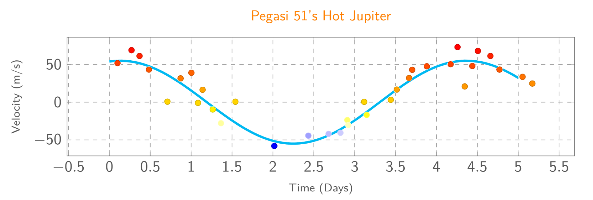
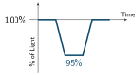

Jed Rembold
March 4, 2025

\[ \frac{GM_{tot}}{4\pi^2} = \frac{1}{p^2} \frac{M^3_{tot}}{M^3_2} \left(\frac{v_1 p}{2\pi}\right)^3 \]
\[ \frac{GM_{tot}}{4\pi^2} = \frac{1}{p^2} \frac{M^3_{tot}}{M^3_2} \frac{v_1^3 p^3}{8\pi^3} \]
\[ G = \frac{M^2_{tot}}{M^3_2} \frac{v_1^3 p}{2\pi} \]
\[ M_2 = \left(\frac{M^2_{tot}}{G}\frac{v_1^3 p}{2\pi}\right)^{1/3} \]

\[\begin{aligned} \text{% of light } &= \frac{\text{Area of planet}}{\text{Area of star}} \\ &= \frac{\pi R^2_p}{\pi R^2_s} \\ &= \left(\frac{R_p}{R_s}\right)^2 \end{aligned}\]
Doing the convolution directly means constructing the square wave in Numpy and then using Numpy’s convolution function
window = np.ones(size) / size # necessary to scale!
out = np.convolve(signal, window)You really need to ensure your signal points are
ordered by time for this to work! The easiest way to achieve this is
with np.argsort:
sorted_idxs = np.argsort(ts)
sorted_times = ts[sorted_idxs]
sorted_signal = signal[sorted_idxs]Assuming you already have your data in a dataframe, you still need to ensure it is ordered!
df = df.sort_values('ts')where ts is whatever column you want to
sort by
Computing the rolling average is then straightforward:
df['rolling'] = df.sig.rolling(wsize).mean()where sig is whatever column you are
computing the average over, and wsize is the
size of the window you want
You still want to ensure your data is ordered! Can use
arrange if using Tidyverse
df <- arrange(df, colname)Easiest to use rollmean from the
zoo library for the rolling averages
library(zoo)
df <- df %>%
mutate(
rolling = rollmean(colname, k=wsize, fill=NA)
)pd.cut, which
takes several arguments:
bin_labels = pd.cut(df.ts, bins=np.arange(0,10,0.1),
labels=False)Similar to Pandas, you can use the
cut or ntile
functions to compute a binning:
df %>% mutate(
bins = cut(colname, breaks=seq(0,10,0.1)
)gives your bins as intervals, whereas
df %>% mutate(bins = ntile(colname, n=100))gives the bins as integers